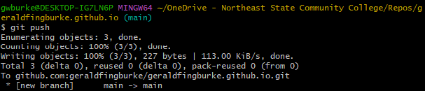

For this lab, you will be leveraging your work throughout the semester into a static portfolio site hosted on GitHub utilizing the Pages deployment tool.
In almost every dev interview I've had, at one point someone asked me to show them something I've worked on.
GitHub is a fantastic way to share the code that we write.
While it is super helpful to be able to share our code, we write code to build applications and enable processes.
That's why it's equally important to be able to share what our code does as much as what it is or how it's structured.
Developers, like artists, should have a portfolio that is:
Being able to give an interviewer a link to a website that effectively communicates your skill and experience is incredibly handy.
My portfolio can be found here
This is where it's important to note that your portfolio should be tailored to you and show your personality.
My portfolio has, this semester, been co-opted by learning content for this course.
The actual development part of my portfolio is actually a little light.
This is due to a combination of laziness in packaging and sharing personal projects, and the vast majority of my industry work being under NDA.
My portfolio also features writing credits and games published.
If you don't make games or write for publication, you don't need sections like these.
But make sure that you consider all that you have to offer and share it in a way that is easy to find and easy to understand.
Go to GitHub
Create a new repository
Call it [your username].github.io
Clone the repository

Add a file called 'index.html'
Commit your changes
Push
You should be able to find your index page @ [your username].github.io in a web browser
It may take a minute or two for changes to update
Email me a link to your portfolio on D2L
Your pages should consist of an index from which you can navigate to a minimum of two project directories
For those of you that have a similar setup from your FTP directory on the geraldburke.com server, it's as simple as copying those files over to your repository
Make sure that you put a little bit of personality into your portfolio.
Dev interviews are vibe checks as much as they are skill checks
Most leads are of the opinion that they can train technical skills, but they can't train being easy to work with.
Getting along and having a rapport with a potential employer or team goes a long way in the interview process.
Sometimes your portfolio will be reviewed before you're called for an interview.
In these cases, you'll want to be sure that your portfolio communicates something about you.